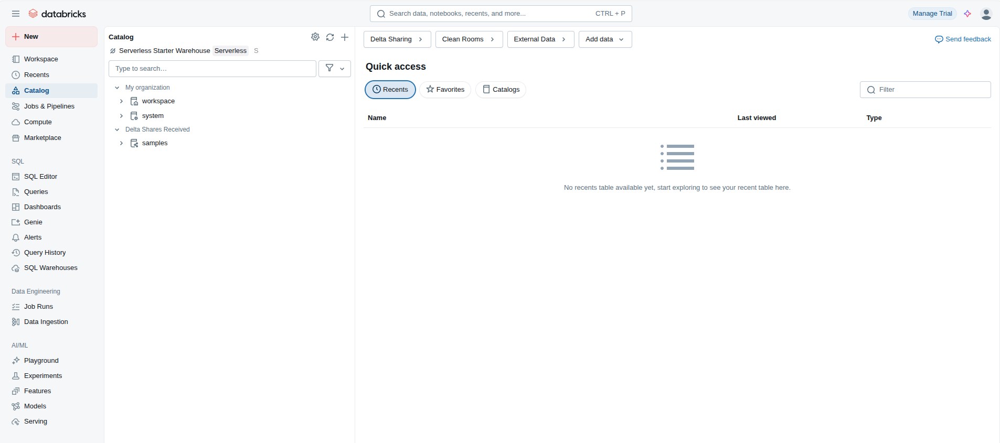

Módulo 6: Transformación de Datos con Spark
En la primera parte, ingerimos los datos y los guardamos en tablas Delta (nuestra capa "Bronce" o de datos crudos). Ahora, vamos a limpiarlos, enriquecerlos y prepararlos para el análisis, creando una capa "Plata" de datos validados y estructurados.
6.1. Limpieza y Tipado de Datos
Al ingerir datos, Spark a menudo infiere los tipos de datos (inferSchema), pero no siempre acierta, especialmente con fechas o números en formato de texto. Nuestro primer paso es asegurar que cada columna tenga el tipo de dato correcto. Usaremos Spark SQL en un notebook para crear una nueva tabla `secop_silver`.
-- Crear una tabla PLATA a partir de la BRONCE
-- Aquí corregimos tipos de datos y renombramos columnas para mayor claridad.
CREATE OR REPLACE TABLE main.diplomado_datos.secop_silver AS
SELECT
uid,
CAST(id_contrato AS LONG) AS id_contrato,
nombre_entidad,
departamento_entidad,
ciudad_entidad,
descripcion_del_proceso,
CAST(valor_del_contrato AS DOUBLE) AS valor_contrato,
-- Convertimos la fecha a un formato estándar
TO_DATE(fecha_de_firma, 'dd/MM/yyyy') AS fecha_firma,
tipodoc_proveedor AS tipo_doc_proveedor,
documento_proveedor,
proveedor_adjudicado,
origen
FROM
main.diplomado_datos.secop;
-- Verificamos el resultado
SELECT * FROM main.diplomado_datos.secop_silver LIMIT 10;
6.2. Enriquecimiento de Datos (JOIN)
Una vez que nuestras tablas base están limpias, podemos cruzarlas para generar insights más profundos. Vamos a crear una tabla "Oro", que son datos ya agregados y listos para el consumo por parte de analistas o para alimentar dashboards.
En este ejemplo, crearemos una tabla que resuma el total de contratos por departamento y lo cruzaremos con la cantidad de instituciones educativas en ese mismo departamento.
-- Paso 1: Crear una vista temporal con los contratos agregados
CREATE OR REPLACE TEMP VIEW contratos_por_departamento AS
SELECT
departamento_entidad,
COUNT(*) AS numero_contratos,
SUM(valor_contrato) AS valor_total_contratos
FROM
main.diplomado_datos.secop_silver
GROUP BY
departamento_entidad;
-- Paso 2: Crear una vista temporal con las instituciones agregadas
CREATE OR REPLACE TEMP VIEW instituciones_por_departamento AS
SELECT
departamento,
COUNT(DISTINCT codigo_establecimiento) AS numero_instituciones
FROM
main.diplomado_datos.men_estadisticas
GROUP BY
departamento;
-- Paso 3: Unir (JOIN) las dos vistas para crear nuestra tabla ORO final
CREATE OR REPLACE TABLE main.diplomado_datos.analisis_departamental_oro AS
SELECT
c.departamento_entidad AS departamento,
c.numero_contratos,
c.valor_total_contratos,
i.numero_instituciones,
-- Calculamos una nueva métrica: inversión por institución
(c.valor_total_contratos / i.numero_instituciones) AS inversion_por_institucion
FROM
contratos_por_departamento c
JOIN
instituciones_por_departamento i ON c.departamento_entidad = i.departamento;
-- ¡Nuestra tabla de análisis está lista para ser consultada!
SELECT * FROM main.diplomado_datos.analisis_departamental_oro ORDER BY valor_total_contratos DESC;
Módulo 7: Consultando con el SQL Editor
Ahora que nuestros datos están limpios y enriquecidos en el Lakehouse, podemos usar el SQL Editor para explorarlos de forma interactiva, aprovechando la velocidad del SQL Warehouse.
7.1. Navegando con el Catalog Explorer
Antes de consultar, ve al Catalog en el menú izquierdo. Aquí verás la jerarquía de 3 niveles de Unity Catalog que gobierna todos nuestros datos.
Recordatorio: La Jerarquía de Unity Catalog
Para referirnos a una tabla de forma inequívoca y evitar ambigüedades, siempre usamos la notación completa de 3 niveles: catalogo.esquema.tabla. En nuestro caso, consultaremos las tablas `secop_silver` y `analisis_departamental_oro` que creamos en el módulo anterior.
(main)"] --> B["Esquema
(diplomado_datos)"] B --> C["Tabla Plata
(secop_silver)"] B --> D["Tabla Oro
(analisis_departamental_oro)"] style A fill:#e0f2fe,stroke:#3b82f6 style B fill:#dcfce7,stroke:#16a34a style C fill:#fef9c3,stroke:#eab308 style D fill:#fef9c3,stroke:#eab308

7.2. ¡A Consultar la Tabla de Oro!
Ve al SQL Editor en el menú, asegúrate de que esté seleccionado tu SQL Warehouse y ejecuta tus consultas sobre la tabla agregada que preparamos.
-- ¿Qué departamentos tienen la mayor inversión por institución educativa?
-- Esta consulta es ahora muy simple porque todo el trabajo duro
-- de limpieza y unión ya se hizo y se materializó en la tabla ORO.
SELECT
departamento,
numero_contratos,
FORMAT_NUMBER(valor_total_contratos, 2, 'es_CO') AS valor_total_contratos,
numero_instituciones,
FORMAT_NUMBER(inversion_por_institucion, 2, 'es_CO') AS inversion_por_institucion
FROM
main.diplomado_datos.analisis_departamental_oro
ORDER BY
inversion_por_institucion DESC
LIMIT 15;
Módulo 8: El Poder de MERGE para Sincronizar Datos
En el mundo real, los datos cambian constantemente. Necesitamos una forma eficiente de actualizar nuestras tablas con los últimos cambios. La operación `MERGE` (también conocida como "upsert") es la herramienta perfecta para esto, ya que puede insertar, actualizar o eliminar registros en una sola transacción.
8.1. Escenario de Actualización
Imaginemos que tenemos una tabla de empleados y recibimos un archivo diario con cambios: algunos empleados son nuevos, otros tienen actualizaciones de salario y otros quizás ya no están.
Lógica del Comando MERGE
El comando `MERGE` compara una tabla fuente (los cambios) con una tabla destino (nuestros datos actuales) basándose en una clave de unión (como el `id` del empleado).
UPDATE SET salario = nuevo_salario"]; E --> G["Acción 2:
INSERT (nuevo_empleado)"];
8.2. Ejemplo Práctico de MERGE
-- Paso 1: Crear nuestra tabla de empleados (destino)
CREATE OR REPLACE TABLE main.diplomado_datos.empleados (
id INT,
nombre STRING,
salario INT,
estado STRING
);
INSERT INTO main.diplomado_datos.empleados VALUES
(1, 'Ana', 60000, 'Activo'),
(2, 'Juan', 70000, 'Activo'),
(3, 'Pedro', 65000, 'Activo');
-- Paso 2: Crear una vista con los cambios de hoy (fuente)
CREATE OR REPLACE TEMP VIEW cambios_empleados AS
SELECT * FROM VALUES
(2, 'Juan', 75000, 'Activo'), -- A Juan le subieron el sueldo
(4, 'Maria', 80000, 'Activo') -- Maria es una nueva contratación
AS (id, nombre, salario, estado);
-- Paso 3: Ejecutar el MERGE
MERGE INTO main.diplomado_datos.empleados AS destino
USING cambios_empleados AS fuente
ON destino.id = fuente.id
WHEN MATCHED THEN
-- Si el empleado ya existe, actualiza su salario
UPDATE SET
destino.salario = fuente.salario,
destino.estado = fuente.estado
WHEN NOT MATCHED THEN
-- Si el empleado es nuevo, lo inserta
INSERT (id, nombre, salario, estado)
VALUES (fuente.id, fuente.nombre, fuente.salario, fuente.estado);
-- Resultado: Juan tiene su salario actualizado y Maria ha sido añadida.
-- Todo en una sola operación atómica y segura.
SELECT * FROM main.diplomado_datos.empleados ORDER BY id;
Módulo 9: Auditoría y Fiabilidad con Time Travel
Uno de los "superpoderes" de Delta Lake es su capacidad de mantener un historial de cada cambio. Esto no solo es útil para auditorías, sino que es una red de seguridad increíble para revertir errores.
9.1. Explorando el Historial
Cada operación en nuestra tabla `empleados` (el `CREATE`, el `INSERT`, el `MERGE`) ha creado una nueva versión. Podemos ver este log de transacciones con un simple comando.
-- Muestra el historial de la tabla, quién hizo qué y cuándo
DESCRIBE HISTORY main.diplomado_datos.empleados;

9.2. Revertir un Error (La Red de Seguridad)
Imaginemos que alguien ejecuta un `DELETE` por error, borrando a todos los empleados.
-- ¡Desastre! Alguien borró todos los datos.
DELETE FROM main.diplomado_datos.empleados;
-- La tabla está vacía ahora.
SELECT * FROM main.diplomado_datos.empleados;
Con Time Travel, la solución es trivial. Simplemente identificamos la versión anterior al borrado (usando `DESCRIBE HISTORY`) y restauramos la tabla a ese estado.
-- Consultamos el historial, vemos que la última versión buena es la 2.
-- ¡Restauramos la tabla a la versión 2 en un instante!
RESTORE TABLE main.diplomado_datos.empleados TO VERSION AS OF 2;
-- ¡Magia! Todos nuestros datos están de vuelta, sanos y salvos.
SELECT * FROM main.diplomado_datos.empleados ORDER BY id;
Módulo 10: Pipelines Declarativos con Delta Live Tables (DLT)
Hasta ahora hemos ejecutado nuestros scripts de forma imperativa (paso a paso). DLT es un framework que nos permite construir pipelines de datos de forma declarativa. En lugar de decir "primero haz esto, luego esto...", le decimos "quiero que esta tabla final exista, y depende de estas otras". DLT se encarga del resto.
10.1. ¿Por qué DLT?
DLT automatiza tareas complejas de la ingeniería de datos:
- Gestión automática de la infraestructura del clúster.
- Validación de datos y gestión de calidad con "expectativas".
- Manejo de errores y reintentos automáticos.
- Visualización del linaje de datos de forma gráfica.

10.2. Ejemplo de un Pipeline DLT (SQL)
Un pipeline DLT se define en un notebook, pero usando una sintaxis ligeramente diferente. Observa los decoradores `@dlt.table` y las restricciones de calidad `CONSTRAINT`.
-- Define la tabla BRONCE leyendo de una fuente en la nube
-- El decorador LIVE indica que es una tabla gestionada por DLT.
CREATE OR REFRESH STREAMING LIVE TABLE secop_raw
COMMENT "Datos crudos de contratos del SECOP"
AS SELECT * FROM cloud_files("/databricks-datasets/secop/", "csv", map("header", "true"));
-- Define la tabla PLATA a partir de la BRONCE, aplicando limpieza y expectativas
CREATE OR REFRESH LIVE TABLE secop_cleaned (
-- Definimos expectativas de calidad. Si no se cumplen, los datos se pueden descartar o marcar.
CONSTRAINT valor_valido EXPECT (valor_contrato > 0) ON VIOLATION FAIL UPDATE,
CONSTRAINT fecha_valida EXPECT (fecha_firma IS NOT NULL) ON VIOLATION DROP ROW
)
COMMENT "Datos de contratos limpios y validados."
AS SELECT
CAST(id_contrato AS LONG) AS id_contrato,
nombre_entidad,
CAST(valor_del_contrato AS DOUBLE) AS valor_contrato,
TO_DATE(fecha_de_firma, 'dd/MM/yyyy') AS fecha_firma
FROM LIVE.secop_raw;
-- Define la tabla ORO agregando los datos de PLATA
CREATE OR REFRESH LIVE TABLE secop_resumen_oro
COMMENT "Resumen agregado del valor de los contratos por entidad"
AS SELECT
nombre_entidad,
SUM(valor_contrato) AS total_contratado
FROM LIVE.secop_cleaned
GROUP BY nombre_entidad;
Módulo 11: Conclusión y Próximos Pasos Avanzados
En esta segunda parte, hemos profundizado en el corazón de la ingeniería de datos en Databricks. Aprendimos a transformar datos crudos en activos de alto valor (Oro) y a usar las funciones avanzadas de Delta Lake (`MERGE`, `Time Travel`) para construir pipelines fiables y auditables.
¿Qué sigue en tu viaje con Databricks?
Has sentado las bases de la ingeniería de datos. El ecosistema de Databricks es vasto y ahora estás listo para explorar áreas más especializadas:
- Machine Learning: Utiliza las tablas que has creado para entrenar modelos con MLflow, la herramienta de Databricks para gestionar todo el ciclo de vida del aprendizaje automático.
- Streaming de Datos: Pasa de procesar datos en lotes (batch) a procesarlos en tiempo real a medida que llegan, usando Structured Streaming con Delta Lake.
- Optimización de Rendimiento: Aprende técnicas avanzadas como el particionamiento, Z-Ordering y la optimización de Photon para hacer que tus consultas sobre tablas de Terabytes se ejecuten en segundos.
- Gobernanza Avanzada: Profundiza en Unity Catalog para gestionar el linaje de datos, el control de acceso a nivel de columna y fila, y compartir datos de forma segura con otras organizaciones usando Delta Sharing.